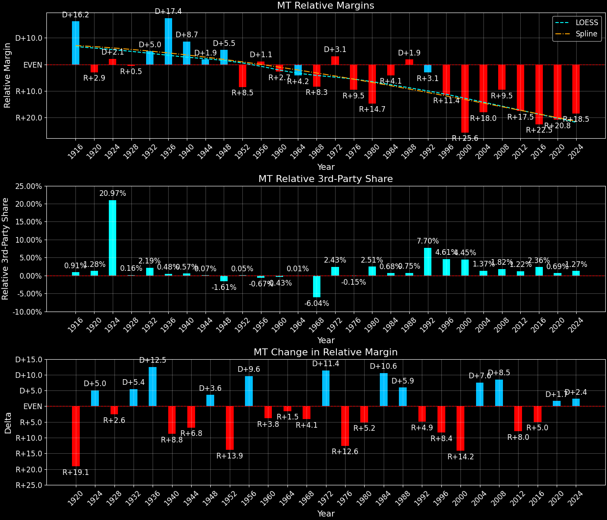

Montana (MT) — Statewide

Margins · 3rd-Party share · Pres. deltas

Relative margins · Relative 3rd-Party · Rel. deltas
Montana (MT) — Total Data
| Year | EVs | D | R | State Margin | Nat. Margin | Rel. Margin | Total votes |
|---|---|---|---|---|---|---|---|
| 1968 | 4 | 114,117(41.8%) | 138,835(50.9%) | R+9.1 | R+0.6 | R+8.5 | 272,967 |
| 1972 | 4 | 120,197(39.5%) | 183,976(60.5%) | R+21.0 (Δ R+11.9) | R+23.5 (Δ R+23.0) | D+2.6 (Δ D+11.0) | 304,173 |
| 1976 | 4 | 149,259(45.4%) | 173,703(52.8%) | R+7.4 (Δ D+13.5) | D+2.2 (Δ D+25.7) | R+9.6 (Δ R+12.2) | 328,734 |
| 1980 | 4 | 118,032(32.4%) | 206,814(56.8%) | R+24.4 (Δ R+17.0) | R+9.9 (Δ R+12.1) | R+14.5 (Δ R+4.9) | 363,952 |
| 1984 | 4 | 146,742(38.2%) | 232,450(60.5%) | R+22.3 (Δ D+2.1) | R+18.1 (Δ R+8.2) | R+4.2 (Δ D+10.3) | 384,377 |
| 1988 | 4 | 168,956(46.2%) | 190,412(52.1%) | R+5.9 (Δ D+16.4) | R+7.7 (Δ D+10.4) | D+1.9 (Δ D+6.1) | 365,694 |
| 1992 | 3 | 154,507(37.6%) | 144,207(35.1%) | D+2.5 (Δ D+8.4) | D+5.6 (Δ D+13.3) | R+3.1 (Δ R+5.0) | 410,611 |
| 1996 | 3 | 167,922(41.2%) | 179,652(44.1%) | R+2.9 (Δ R+5.4) | D+8.6 (Δ D+3.0) | R+11.4 (Δ R+8.4) | 407,261 |
| 2000 | 3 | 137,126(33.4%) | 240,178(58.4%) | R+25.1 (Δ R+22.2) | D+0.5 (Δ R+8.0) | R+25.6 (Δ R+14.2) | 410,997 |
| 2004 | 3 | 173,710(38.6%) | 266,063(59.1%) | R+20.5 (Δ D+4.6) | R+2.5 (Δ R+3.0) | R+18.0 (Δ D+7.5) | 450,445 |
| 2008 | 3 | 232,159(47.1%) | 243,882(49.5%) | R+2.4 (Δ D+18.1) | D+7.3 (Δ D+9.7) | R+9.6 (Δ D+8.4) | 492,750 |
| 2012 | 3 | 201,839(41.7%) | 267,928(55.3%) | R+13.6 (Δ R+11.3) | D+3.9 (Δ R+3.4) | R+17.5 (Δ R+7.9) | 484,484 |
| 2016 | 3 | 177,709(35.4%) | 279,240(55.6%) | R+20.2 (Δ R+6.6) | D+2.1 (Δ R+1.8) | R+22.3 (Δ R+4.8) | 501,821 |
| 2020 | 3 | 244,786(40.5%) | 343,602(56.9%) | R+16.4 (Δ D+3.9) | D+4.4 (Δ D+2.3) | R+20.8 (Δ D+1.5) | 603,674 |
| 2024 | 4 | 231,906(38.5%) | 352,079(58.4%) | R+19.9 (Δ R+3.6) | R+1.5 (Δ R+6.0) | R+18.4 (Δ D+2.4) | 602,990 |
Column explanations
- Δ
- Change (delta) in the value from the previous election year.
- Year
- Election year.
- EVs
- Number of electoral votes allocated to this state or unit.
- D
- Number of votes for the Democratic candidate (raw count(pct%)).
- R
- Number of votes for the Republican candidate (raw count(pct%)).
- State Margin
- Margin between the two major-party candidates, including third-party votes ((D - R)/total).
- Nat. Margin
- The national presidential margin for that year, including third-party votes ((D_total - R_total)/total_votes).
- Rel. Margin
- The presidential margin relative to the national presidential margin (Margin - Nat. Margin).
- Total votes
- Total voter turnout or ballots cast (when provided).
Montana (MT) — Third-Party Data
| Year | Other votes | State 3rd-Party Share | 3rd-Party Nat. Share | 3rd-Party Rel. Share |
|---|---|---|---|---|
| 1968 | 20,015(7.3%) | 7.33% | 13.59% | -6.25% |
| 1972 | 0(0.0%) | 0.00% | 0.09% | -0.09% |
| 1976 | 5,772(1.8%) | 1.76% | 0.33% | 1.42% |
| 1980 | 39,106(10.7%) | 10.74% | 6.98% | 3.77% |
| 1984 | 5,185(1.3%) | 1.35% | 0.12% | 1.23% |
| 1988 | 6,326(1.7%) | 1.73% | 0.21% | 1.52% |
| 1992 | 111,897(27.3%) | 27.25% | 19.23% | 8.02% |
| 1996 | 59,687(14.7%) | 14.66% | 9.68% | 4.98% |
| 2000 | 33,693(8.2%) | 8.20% | 3.65% | 4.55% |
| 2004 | 10,672(2.4%) | 2.37% | 0.84% | 1.53% |
| 2008 | 16,709(3.4%) | 3.39% | 1.38% | 2.01% |
| 2012 | 14,717(3.0%) | 3.04% | 1.62% | 1.41% |
| 2016 | 44,872(8.9%) | 8.94% | 5.54% | 3.41% |
| 2020 | 15,286(2.5%) | 2.53% | 1.84% | 0.69% |
| 2024 | 19,005(3.2%) | 3.15% | 1.88% | 1.27% |
Column explanations
- Year
- Election year.
- Other votes
- Number of votes for third-party (other) candidates (raw count(pct%)).
- State 3rd-Party Share
- Share of the vote received by third-party (other) candidates.
- 3rd-Party Nat. Share
- The national third-party share for that year (3rd-Party votes / total votes).
- 3rd-Party Rel. Share
- Third-party share relative to the national third-party share (3rd-Party share - Nat. 3rd-Party share).

Two-party margins · relative · deltas
Montana (MT) — Two-Party Data
| Year | 2-Party Margin | 2-Party Nat. Margin | 2-Party Rel. Margin |
|---|---|---|---|
| 1968 | R+9.8 | R+0.7 | R+9.1 |
| 1972 | R+21.0 (Δ R+11.2) | R+23.6 (Δ R+22.9) | D+2.6 (Δ D+11.7) |
| 1976 | R+7.6 (Δ D+13.4) | D+2.2 (Δ D+25.8) | R+9.8 (Δ R+12.4) |
| 1980 | R+27.3 (Δ R+19.8) | R+10.6 (Δ R+12.8) | R+16.7 (Δ R+6.9) |
| 1984 | R+22.6 (Δ D+4.7) | R+18.1 (Δ R+7.5) | R+4.5 (Δ D+12.2) |
| 1988 | R+6.0 (Δ D+16.6) | R+7.8 (Δ D+10.4) | D+1.8 (Δ D+6.3) |
| 1992 | D+3.4 (Δ D+9.4) | D+6.9 (Δ D+14.7) | R+3.5 (Δ R+5.3) |
| 1996 | R+3.4 (Δ R+6.8) | D+9.5 (Δ D+2.6) | R+12.8 (Δ R+9.4) |
| 2000 | R+27.3 (Δ R+23.9) | D+0.5 (Δ R+8.9) | R+27.8 (Δ R+15.0) |
| 2004 | R+21.0 (Δ D+6.3) | R+2.5 (Δ R+3.0) | R+18.5 (Δ D+9.3) |
| 2008 | R+2.5 (Δ D+18.5) | D+7.4 (Δ D+9.8) | R+9.8 (Δ D+8.7) |
| 2012 | R+14.1 (Δ R+11.6) | D+3.9 (Δ R+3.4) | R+18.0 (Δ R+8.2) |
| 2016 | R+22.2 (Δ R+8.2) | D+2.2 (Δ R+1.7) | R+24.4 (Δ R+6.4) |
| 2020 | R+16.8 (Δ D+5.4) | D+4.5 (Δ D+2.3) | R+21.3 (Δ D+3.1) |
| 2024 | R+20.6 (Δ R+3.8) | R+1.6 (Δ R+6.1) | R+19.0 (Δ D+2.3) |
Column explanations
- Δ
- Change (delta) in the value from the previous election year.
- Year
- Election year.
- 2-Party Margin
- Margin between the two major-party candidates, ignoring third-party votes ((D - R)/(D + R)).
- 2-Party Nat. Margin
- The national presidential margin for that year, including third-party votes ((D_total - R_total)/total_votes).
- 2-Party Rel. Margin
- The presidential margin relative to the national presidential margin (Margin - Nat. Margin).